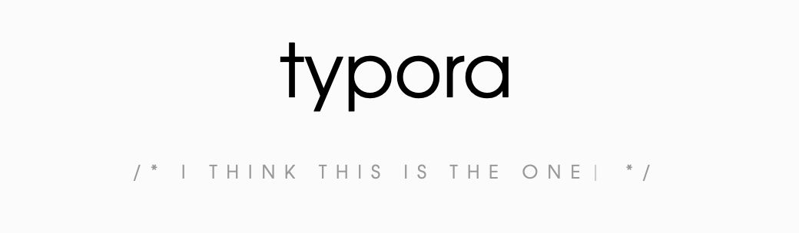
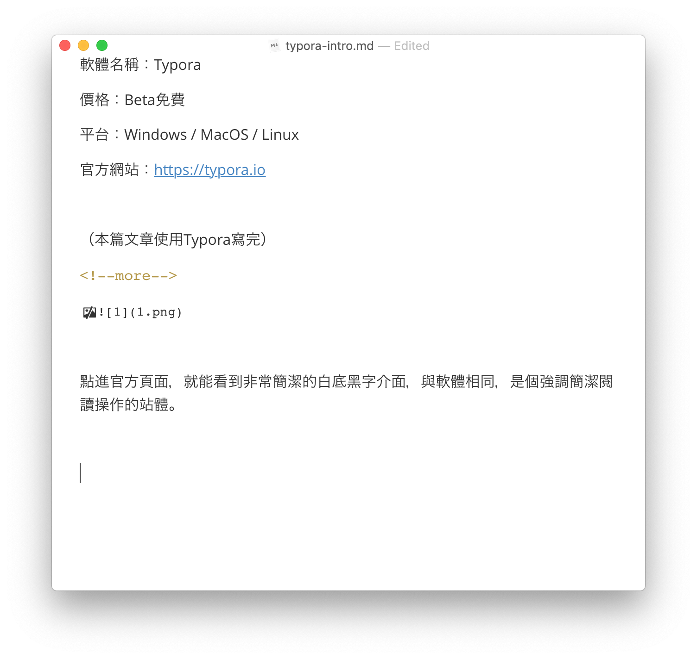
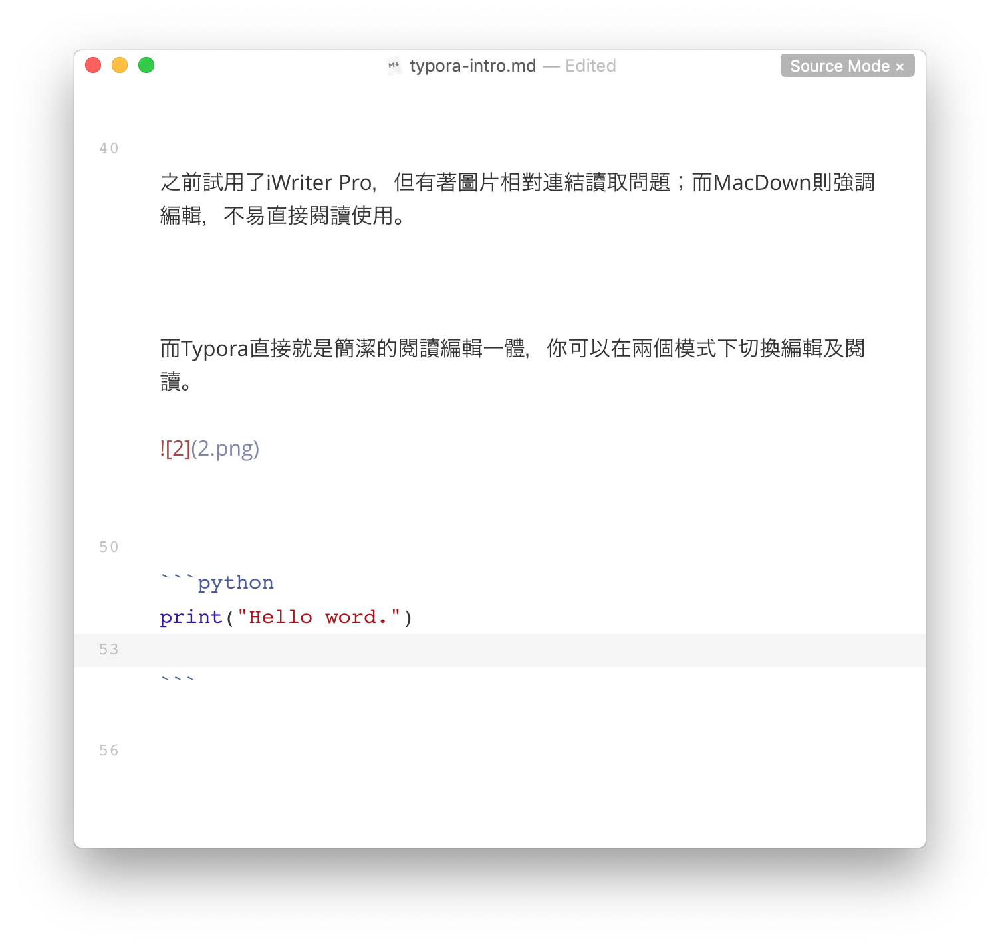
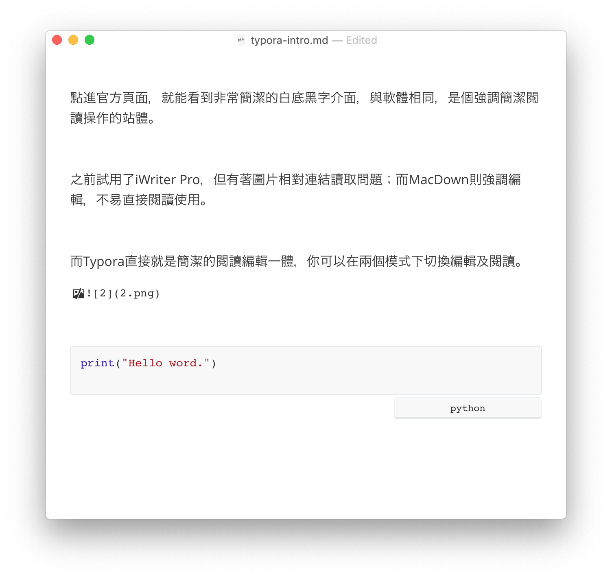

【分享】跨平台的Markdown編輯軟體 - typora
作為Markdown的愛用者，一直在找mac上有沒有好用的md編輯軟體。
試用過了iWriter Pro（付費的），MacDown（免費），但都有其缺陷。
直到最近發現了一個開發中的專案，Typora。
軟體名稱：Typora
價格：Beta免費
平台：Windows / MacOS / Linux
官方網站：https://typora.io
（本篇文章使用Typora寫完）

點進官方頁面，就能看到非常簡潔的白底黑字介面，與軟體相同，是個強調簡潔閱讀操作的站體。
之前試用了iWriter Pro，但有著圖片相對連結讀取問題；而MacDown則強調編輯，不易直接閱讀使用。
而Typora直接就是簡潔的閱讀編輯一體，你可以在兩個模式下切換編輯及閱讀。

就以編輯一個Python的原始碼來說，如下：
1 | print("Hello word.") |
以下是於原始碼模式編輯的樣子。

以下是閱讀模式編輯的樣子：

在Mac下，按住⌘+/可以自由地切換兩個模式，非常方便。
原本都跳槽到用文字編輯寫md的我，現在覺得typora終於實現了輕量簡便的編輯。